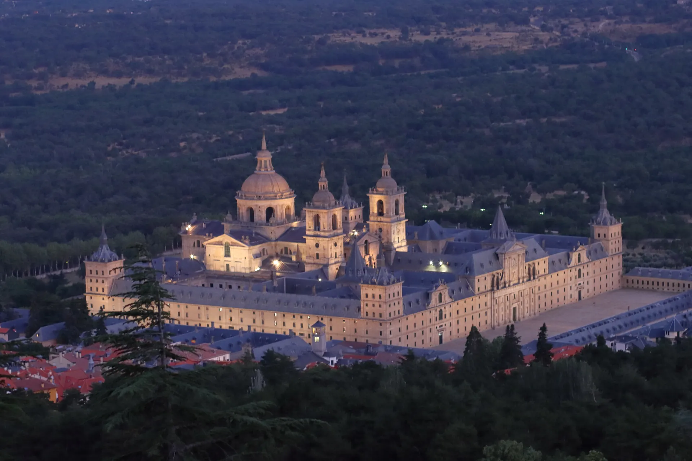
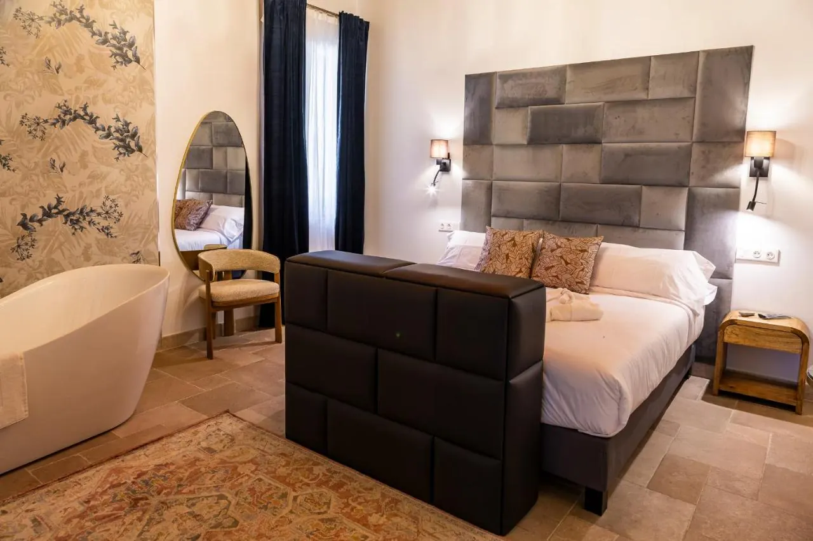
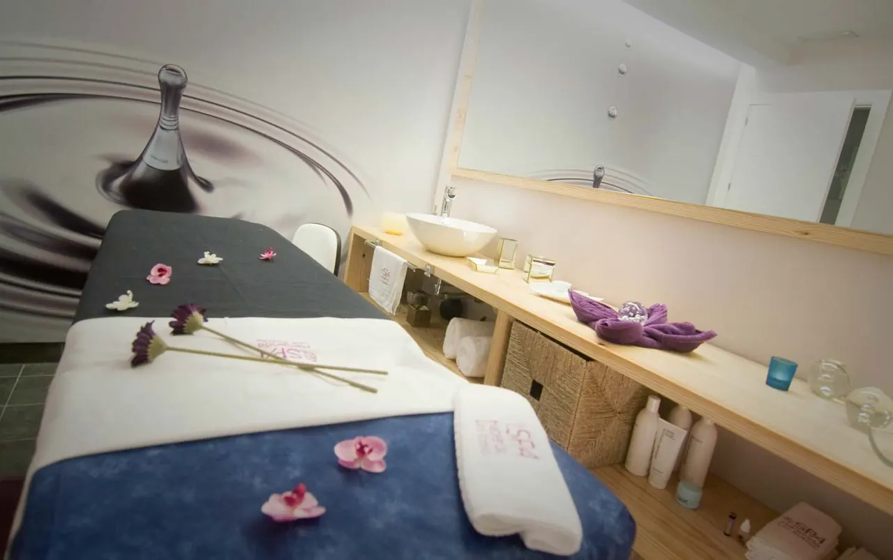
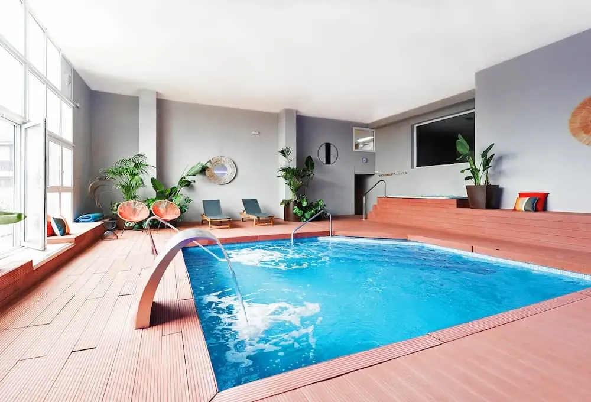

01 / Sábado por la tarde
Piedra
Piedra
y silencio.
El monasterio, el pueblo y un café en la calle Floridablanca.

28 y 29 de noviembre de 2026
El Escorial al atardecer, un spa entre robles y una mañana en la sierra. Un fin de semana para los dos.
Foto: Arturo Francisco Barbero, CC BY-SA 4.0, Wikimedia Commons

El monasterio, el pueblo y un café en la calle Floridablanca.
De un vistazo
8:45 salida de Zaragoza · 13:00 llegada a San Lorenzo de El Escorial · 13:30 comida · 15:15 a 18:15 paseo y atardecer en la Silla de Felipe II · 19:00 spa en Navacerrada · 21:00 check-in · 21:30 cena
Plan secundario: Segovia, con su spa en un convento.
8:00 check out · 8:45 senda de la Peña del Águila · 10:45 hacia Madrid · comida en Madrid · vuelta a Zaragoza
Luxury Suites El Encanto del Pinar · reserva en Booking confirmada

Dos planes. En el principal vamos de Zaragoza directos a El Escorial y hacemos el check-in por la noche; Segovia queda como alternativa.
Tiempo en coche desde San Rafael, calculado sin tráfico con el motor de rutas de OpenStreetMap (suele dar algo más que Google Maps):
El Escorial lo junta todo a media hora: un monumento de primera, un pueblo bonito para pasear, el mejor atardecer de la sierra en la Silla de Felipe II y un spa de calidad en Navacerrada, de camino a casa.
Cercedilla es más de montaña que de pueblo con encanto. La Granja merece la pena, pero está más lejos y su palacio cierra a las 18:00. Patones de Arriba queda descartado: está a casi dos horas.
Ruta por la mañana con las maletas ya en el coche, y de ahí directos a Madrid. Amanece hacia las 8:25.
Plan principal

Más de 300 m² con luz natural y vistas al jardín. Precios de su web oficial. Reserva previa imprescindible, también para el circuito: el aforo es de 8 a 10 personas.
| Modalidad | Qué incluye | Precio |
|---|
Plan principal · segunda opción

Hotel de cuatro estrellas solo para adultos, en el mismo Navacerrada, así que el horario del sábado no cambia. Precios de su web oficial; el horario del spa no está publicado, se confirma al reservar.
| Modalidad | Qué incluye | Precio |
|---|
Plan secundario

Precios orientativos de webs de reserva y guías: los confirmamos al reservar.
| Modalidad | Qué incluye | Precio |
|---|
Con un fin de semana de finales de noviembre, mejor no dejarlo para el viernes. Ninguna está hecha todavía.
Plan principal: El Escorial
Plan secundario: Segovia